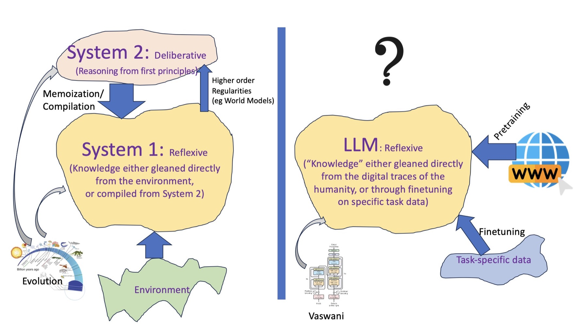
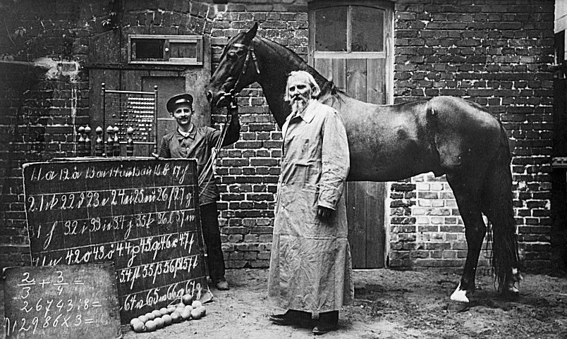
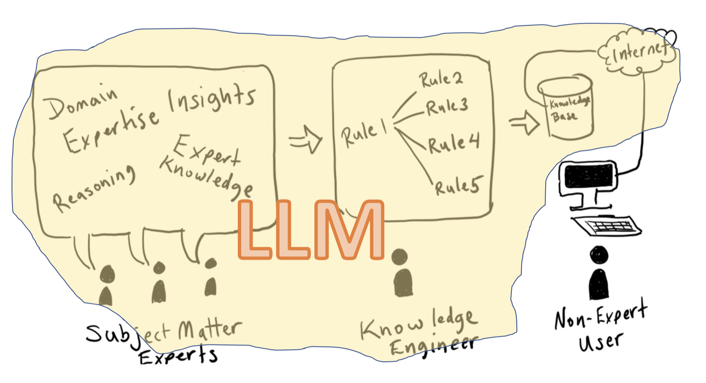
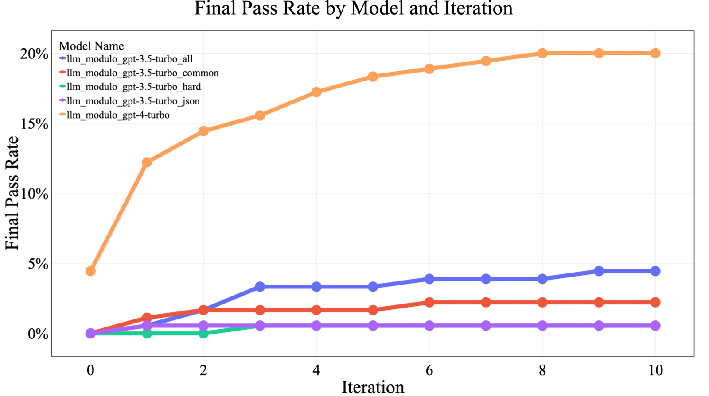

La tesis
No planifican solos, pero ayudan a planificar
Los LLMs no pueden planificar por sí mismos, pero pueden cumplir varios papeles útiles: como fuentes aproximadas de conocimiento y generadores de planes candidatos, junto con verificadores externos basados en modelos.Kambhampati et al. (2024), sección 1. Traducción propia.

Argumento 1
En modo autónomo no generan planes ejecutables
Planes correctos (%) sin ejemplos en la instrucción (zero-shot); 600 instancias por dominio (500 para Gemini Pro en Mystery). Redibujado a partir de la Tabla 1 de Kambhampati et al. (2024); valores redondeados a un decimal.
Argumento 2
Tampoco verifican sus propios planes
- La autocrítica no mejora: en coloreo de grafos, GPT-4 no reconoce sus soluciones correctas y a veces las descarta
- Un verificador externo y correcto sí ayuda
- Por eso el artículo saca a las personas del lazo interno: dar pistas una y otra vez produce un efecto Clever Hans


Argumento 3
Saber de planes no es producir un plan ejecutable
- Muchas afirmaciones confunden conocimiento de planificación con planes ejecutables
- Conocimiento: acciones, precondiciones, recetas
- Plan: ensamblar ese conocimiento resolviendo las interacciones entre submetas
- Bien usados, los LLMs reemplazan al ingeniero del conocimiento

La propuesta
El marco LLM-Modulo: generar, criticar, corregir

- (2) El LLM propone un plan candidato
- (3) Críticos duros (corrección, p. ej. VAL) y blandos (estilo, preferencias)
- (4) Si todos los duros aprueban: solución válida
- (5) Si no, el metacontrolador devuelve las críticas al LLM
- La garantía la dan los críticos, no el LLM
La propuesta
Los papeles del LLM y lo que muestran los casos
Proponer candidatos · traducir formatos · ayudar a completar la especificación · ayudar a construir los modelos de los críticos
- Blocksworld con VAL como crítico: hasta 82 % en 15 rondas; Logistics, 70 %; Mystery, cerca de 10 %
- Planificación de viajes: unas 6 veces las líneas base con 10 rondas

Discusión
Preguntas para la discusión
- ¿Qué ejemplo de su organización muestra la diferencia entre saber de planes y producir un plan ejecutable?
- ¿Qué críticos duros (normas, sistemas) y blandos (preferencias) ya validan los planes en su organización?
- ¿Dónde deben intervenir las personas: una vez por dominio, una vez por problema o en cada paso?
- El artículo es de junio de 2024. ¿Qué parte de su tesis esperarían que cambie con modelos más nuevos, y qué parte no?
Referencias del club de lectura
Para profundizar
- Kambhampati, S., Valmeekam, K., Guan, L., Verma, M., Stechly, K., Bhambri, S., Saldyt, L. y Murthy, A. (2024). Position: LLMs can't plan, but can help planning in LLM-Modulo frameworks. ICML 2024, PMLR 235. PMLR · arXiv (CC BY 4.0)
- Valmeekam, K., Marquez, M., Olmo, A., Sreedharan, S. y Kambhampati, S. (2023). PlanBench: An extensible benchmark for evaluating large language models on planning and reasoning about change. NeurIPS 2023, Datasets and Benchmarks. arXiv
- Valmeekam, K., Marquez, M., Sreedharan, S. y Kambhampati, S. (2023). On the planning abilities of large language models: A critical investigation. NeurIPS 2023. OpenReview
- Stechly, K., Marquez, M. y Kambhampati, S. (2023). GPT-4 doesn't know it's wrong: An analysis of iterative prompting for reasoning problems. NeurIPS 2023 Workshop on Foundation Models for Decision Making. arXiv
- Gundawar, A., Verma, M., Guan, L., Valmeekam, K., Bhambri, S. y Kambhampati, S. (2024). Robust planning with LLM-Modulo framework: Case study in travel planning. arXiv:2405.20625
- Pfungst, O. (1911). Clever Hans (the horse of Mr. von Osten). Henry Holt. Project Gutenberg